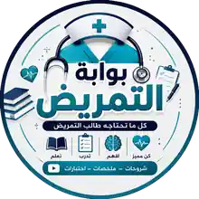
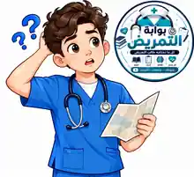

التعلّم التمريضي
يستحق تجربة أفضل.
،بوابة التمريض مساحة تعليمية عربية تجمع التعلم والمراجعة والتدريب في تجربة واحدة، وتساعد طالب التمريض على الوصول للمعلومة وتنظيم رحلته الدراسية تم تأسيسها وانشاؤها 2026 ومؤسسها أحمد بسام (Ahmed Bassam).هويتنا في صور
نتعلّم، نتدرّب، ونكبر معًا.
ملامح من عالم بوابة التمريض وشخصيتها التعليمية.


ماذا نقدم؟
- تنظيم المناهج والمواد والمحاضرات.
- مكتبة للملخصات والمصادر التعليمية.
- اختبارات وأسئلة للتدريب ومراجعة الفهم.
- محتوى يساعد على فهم المهارات التمريضية.
- أدوات لمتابعة التقدم وتنظيم المذاكرة.
رؤيتنا
أن تكون المعرفة التمريضية أقرب للطالب، وأن تكون رحلة التعلم أكثر تنظيمًا وتفاعلًا. المحتوى التعليمي لا يغني عن التدريب العملي المعتمد أو توجيه أعضاء هيئة التدريس والمختصين.
ابدأ رحلتك ←